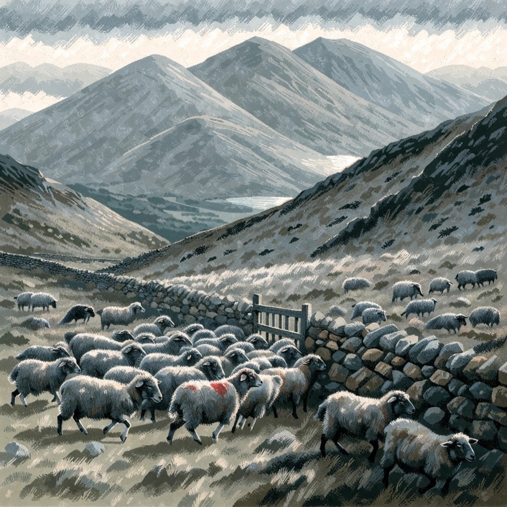

Counting now
–swaps, last 5 minutes
–herds forming now
–seconds behind the chain
Live from api.tetheralabs.com. A herd is fifteen or more automated wallets trading the same way in the same pool in the same minute, with almost nobody on the other side.
Why

The monoculture story: thousands of bots running the same strategy at the same moment, and what that costs the ones who join late.
How
Seven behavioural signals, a seven-day window, one label; self-cancelling trades removed before anything is counted.
Products
The crowding check, the pool trust profile, the wallet fingerprint, the hook.
Shepherd's Warning
The weekly letter. Issue one: one wallet printed a billion dollars.
About
Tethera Labs. TetheraLabs@proton.me